Version 2.0: Send, Receive and Receive Instrument · iOS 17+
Quick start
Stream a track in three steps
On any track
LinkEffekt Send
Streaming
Another deviceWi-Fi or cable
Same deviceapp to app, 2 ms
Onlinea friend, anywhere
In any app
LinkEffekt Receive
In sync
Ableton Live 12.4+speaks Link Audio too: it records any Send and streams its tracks to any Receive.
Open the LinkEffekt app once on every device and allow Local Network access. Without it, the plugins can’t find each other.
Put LinkEffekt Send on the track you want to share. To reach another device, turn on Ableton Link in both host apps, and in the Send’s gear turn on Ableton Link and Share Audio.
Load LinkEffekt Receive on another track, in another app or on another device, and pick the channel in Now Receiving.
Sending from AUM
Perfectly in sync. AUM plays the track ahead by exactly the trip over the network, so it lands right on your beat. Nothing to set.
Sending from any other app or Live
Turn on Bar Sync in the Receive: one bar late, but perfectly tight.
LinkEffekt streams audio between music apps: between apps on the same iPhone or iPad, between devices on your local network (via Ableton Link Audio), or over the internet (Online mode). It ships as three AUv3 plugins that run inside any AUv3 host (AUM, Logic Pro, Cubasis, Drambo, GarageBand and others):
Plugin
Type
Use it to
LinkEffekt Send
Audio effect
Stream a track's audio out. Insert it on the track you want to share.
LinkEffekt Receive
Audio effect
Receive channels. Works in every host; this is the standard receiver.
LinkEffekt Receive Instrument
Instrument
The same receiver as a sound source, for hosts that need one on the channel: as the source in AUM, or on a software-instrument track.
What can you do with it? Jam across devices, route audio between apps on one device, record iOS audio in Ableton Live, play Live’s tracks on your iPad, jam online with a friend, monitor a band. Workflows walks you through each one, step by step.
Free vs. Unlimited Channels: the free version includes 1 Send and 1 Receive channel, fully functional on the local network and between apps on one device. The one-time in-app purchase Unlimited Channels unlocks unlimited instances, monitoring multiple channels at once, and the Online (internet) mode. Purchase or restore it in the LinkEffekt app or directly inside the plugins.
2 · Workflows
Pick your situation. Each workflow names what you need and the few steps to get there. The chapters after it explain every control in detail.
iPad and iPhone in one room. Each of you plays a part, each hears the other right on the beat.
Wi-Fi or cableiPhone · AUMiPad · AUM
In both host apps, turn on Ableton Link (in the app’s own settings, not only in the plugin).
On each device, insert LinkEffekt Send on the track you play. Tap the gear and turn on Ableton Link and Share Audio.
On each device, load LinkEffekt Receive on another track and pick the other device’s channel in Now Receiving.
The status reads In sync. Both directions play on the beat.
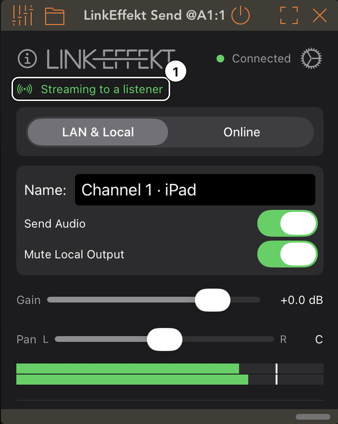
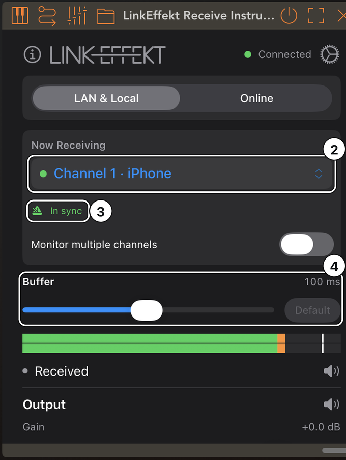
1The Send: someone is listening.
2The other device’s channel, named after the device.
3On the beat.
4Buffer: 100 ms in reserve against Wi-Fi gaps, the default.
Good to know
Each part plays once in the room: the Send mutes your track on your device (Mute Local Output) and the other device plays it. On headphones, turn Mute Local Output off.
Everything in a sending app sounds a little later (typically 50 to 150 ms): AUM renders ahead, so the other side gets it on the beat. If you play a live instrument there and that delay bothers you, see Live Mode in LinkEffekt Send.
In a host without delay compensation (Cubasis), the other side plays behind the beat; turn on Bar Sync there (one bar late).
A cable instead of Wi-Fi: no dropouts from AirDrop, and a much smaller buffer (Plug in a cable).
In one room
Monitor a band on one device
Several players, each with a Send. You hear them all on one device: at a rehearsal, at the mixing desk, in your in-ears.
Wi-FiEach player · SendYour device · Receive
Each player inserts LinkEffekt Send on their track and names it (e.g. Vocals). Gear: Ableton Link and Share Audio on.
On the monitoring device, either load one LinkEffekt Receive with Monitor multiple channels on and tick every channel (summed into one stereo output), or load one Receive per channel for separate faders in your host’s mixer.
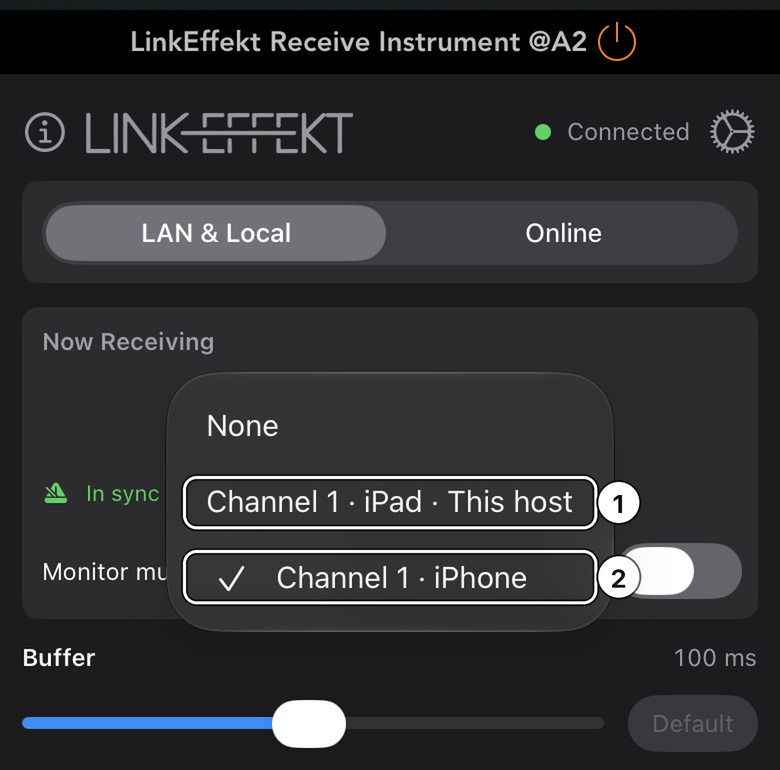
1This host: a Send in this same app.
2The channel you are listening to, with the sender’s device in its name.
Good to know
More than one channel per Receive, or more than one Receive, needs the in-app purchase on the monitoring device. Each player’s single Send is free.
A player who hears their own instrument through the sending app and notices a delay there: Live Mode in that Send (see LinkEffekt Send).
On one device
Route audio between apps on one device
Everything on one iPad or iPhone: record an AUM setup in Cubasis, or run a synth app through another host’s effects.
this deviceAUMCubasis
In AUM, insert LinkEffekt Send on the channel you want.
In Cubasis, load LinkEffekt Receive on an audio track (or Receive Instrument on an instrument track) and pick the channel tagged This device.
Arm the track and record.
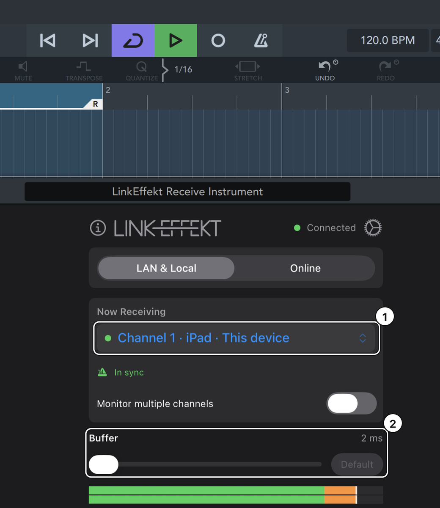
1This device: the Send in AUM, no network involved.
2A 2 ms buffer on a direct path.
Good to know
No Wi-Fi, no Local Network permission, no Ableton Link setup and no gear settings in the Send.
Two tracks in the same app (AUM track 1 to track 2) show up as This host.
For the tightest timing, set both apps to 128 or 256 frames and turn off Multi-core Processing in Cubasis (Setup > Audio; more in Beat Sync).
With Ableton Live
Record iOS audio in Ableton Live
Your iPad session goes into Live, one Live track per iOS track.
Wi-Fi or cableiPad · AUMMac · Live 12.4+
On the iPad, turn on Ableton Link in the host app. Insert LinkEffekt Send on each track you want in Live and give it a name (e.g. Bass). Gear: Ableton Link and Share Audio on.
In Live, open Settings > Link: turn on Link and its Audio switch, and turn Sync to Incoming Audio on.
On a Live audio track, set the input to LinkEffekt, then the channel, and set Monitor to In.
Raise Live’s Link Audio latency until playback is stable, then record.
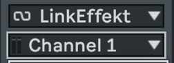
Live’s track input: the peer LinkEffekt, then the channel.
Good to know
Listen to everything through Live. The Send mutes the iPad by default, so you hear each track once and on Live’s grid. With Sync to Incoming Audio on, Live delays its own playback on purpose, so Live’s speakers and the iPad’s would not line up.
Leave AUM’s Link latency compensation at 0: LinkEffekt already places the audio on the Link beat.
The Mac sounds late against your iOS devices in general? Tools like SoundSource delay every app on the Mac; exclude Live there (see My Mac sounds late).
With Ableton Live
Play Live’s tracks on your iPad or iPhone
Jam along with Live, run its tracks through iOS effects, or monitor Live on the iPad.
Wi-Fi or cableMac · Live 12.4+iPad · AUM
In Live, open Settings > Link: turn on Link and its Audio switch, and turn Sync to Incoming Audio off.
On the iPad, turn on Ableton Link in the host app and leave its Link latency compensation at 0.
Load LinkEffekt Receive and pick a Live track in Now Receiving. Every Live track with an audio output appears, returns and the Main output included.
Turn on Bar Sync. The status reads In sync · locked to the bar.
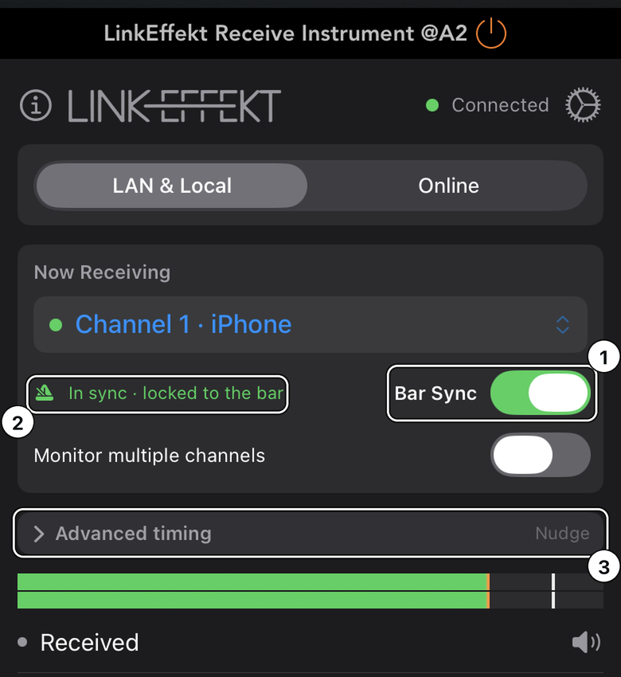
1Bar Sync on.
2Locked to the bar: one bar late, exactly on your “1”.
3Advanced timing: Nudge for the last few milliseconds.
Good to know
Live does not render ahead. Without Bar Sync, its tracks play behind your beat, and the status says by how much.
In this setup Live’s metronome lines up with your iOS apps.
With Ableton Live
Both directions with Live
The iPad sends to Live and plays Live’s tracks at the same time.
Listen through one device: each direction lands on the beat of the side that receives it.
Good to know
Live’s speakers and the iPad’s are apart by Live’s Link Audio latency, so the room never sounds tight on both at once. Whoever sits at Live listens to Live, whoever plays the iPad listens to the iPad.
With Ableton Live
Take the iPad to the couch
Your iPad session streams every track to Live. You want to keep working on the iPad somewhere else and hear the whole session there.
In any LinkEffekt Send, turn on Bypass all LinkEffekt Sends (right under Mute Local Output).
Every Send on the iPad stops streaming, in every host, and every track plays on the iPad. An orange note at the top of each Send says so.
Back at Live, tap the orange note to stream again.
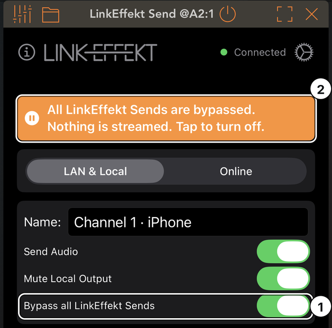
1The switch, in any Send.
2The note in every Send. Tap it to stream again.
Good to know
The switch stays on until you turn it off, also after a restart.
Over the internet
Jam online with a friend
Your friend is somewhere else. You both play, and each of you hears the other locked to your own bars.
internet, peer-to-peerYouYour friend
Both of you need the in-app purchase.
You: in LinkEffekt Send, switch to Online, tap Create Room and send your friend the room code (copy button next to the code).
Your friend: in LinkEffekt Receive, switch to Online, enter the code, tap Join and pick your channel.
Both of you set the same tempo and press play in the host.
For the way back, your friend loads a Send and you a Receive. They join the same room by themselves: one room per host app.
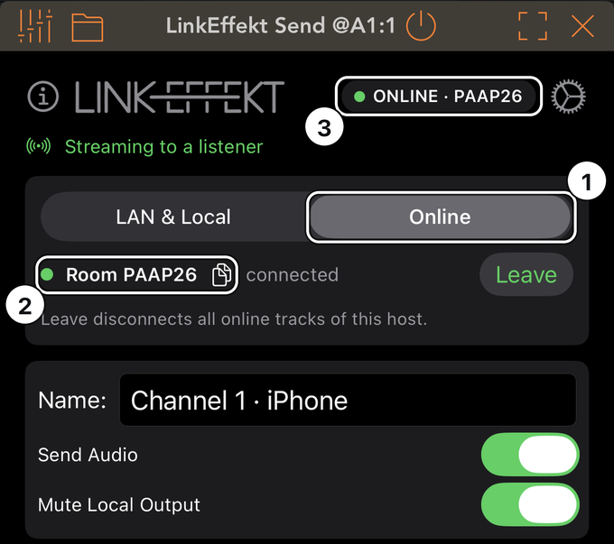
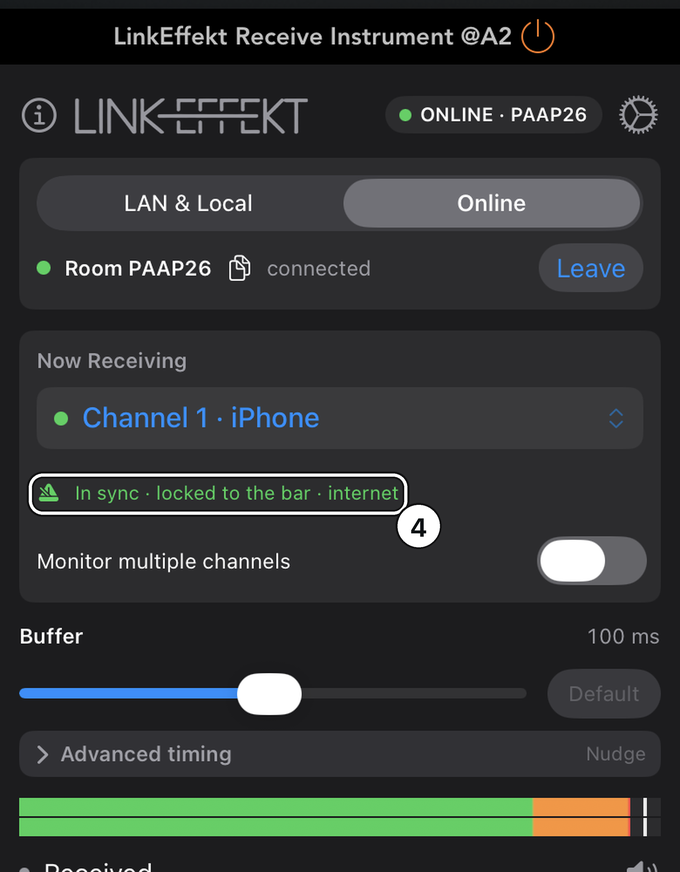
1Online.
2The room code with its copy button; the green dot means your friend is connected.
3The ONLINE badge shows the room in every instance.
4Locked to the bar, over the internet.
Good to know
The friend’s audio lands on your “1”, whole bars late. Each of you hears the other on your own grid, which is exactly right as long as each listens to their own device.
To hear your own part while you stream, turn off Mute Local Output in the Send.
One plugin slot only (a DJ app)? Send my track in the Receive streams this track back into the room (see Online mode).
3 · Basics: local network and one device
What every setup has in common, also in hosts without a workflow of their own (Logic Pro, Drambo, Loopy Pro and others). Send and Receive work on two devices, in two apps on one device, and in the same host app on different tracks.
Before you start: turn on Ableton Link in your host apps. AUM, Logic Pro, Drambo, Loopy Pro, Koala and most other music apps have their own Ableton Link switch in their settings, separate from the one in the LinkEffekt plugins. Turn it on in the sending and in the receiving app, so that both play in the same tempo and on the same beat. LinkEffekt places the received audio on your beat, and that only works if the sending app plays on the shared beat too. Apps without Ableton Link (GarageBand) stream fine, but in their own tempo and on their own bar: the audio arrives, it just cannot land on the beat of the others.
Sender: insert LinkEffekt Send on a track. For other devices, tap the gear and enable Ableton Link and Share Audio. The orange banner disappears when sharing is active.
Receiver: load LinkEffekt Receive on a track in the other app or on the other device (same Wi-Fi network, or a cable: see the tip below).
In the receiver, open the Now Receiving menu and pick the sender's channel.
You should hear audio within a second and see the meter move. The dot next to the channel name turns green, the sender switches to “Streaming to a listener”, and the receiver's status line reads:
In sync
When the sender cannot render ahead it reads “… ms behind the beat” (see Beat Sync), while there is no shared beat reference “Free-run, not locked to the beat”.
Channel names: a new Send is named after its host track, or “Channel 1”, “Channel 2” and so on, followed by the device: “Bass · iPad”, “Channel 1 · iPhone”. So two devices never show the same name, and AUM and Cubasis on one iPad count together. A name you type, or one loaded with a project, stays exactly as it is. Each additional Send instance appears as its own channel.
Tip: plug in a cable
Wi-Fi works, but it can pause for a moment, above all around AirDrop (see Dropouts after AirDrop). A cable doesn't, and you need no router for it.
Plug the iPhone straight into the iPad. Any cable that charges the iPhone from the iPad will do: USB-C to USB-C, USB-C to Lightning, or your usual cable with an adapter.
On the iPhone, turn on Personal Hotspot (Settings > Personal Hotspot > Allow Others to Join).
On the iPad, turn Wi-Fi off. Its Settings now show Ethernet, and the iPhone's channel appears in the Receive as usual.
What you get: AirDrop, AirPlay and the like no longer cause dropouts, and the Buffer in the Receive can come down from 100 to about 25 ms for a much shorter delay.
One of the two devices needs Personal Hotspot (an iPhone, or an iPad with cellular). The other device's own internet traffic then runs over its mobile data; the audio stays on the cable.
At home a wired network works too: each device on a USB-C Ethernet adapter to the router, Wi-Fi off.
Same device or same host: app-to-app routing
Everything on one iPhone or iPad? LinkEffekt routes these cases over a direct fast path that needs no Wi-Fi, no Local Network permission and no Ableton Link setup. It is the lowest-latency, most stable option:
A sender in another app on the same device appears as a channel tagged This device.
A sender inside the same host app (e.g. AUM track 1 to track 2) appears as This host.
Example, record an AUM setup into Cubasis: see Route audio between apps on one device. The same recipe routes a synth app through another host’s effects, or feeds a DJ app’s output into a recorder: anywhere iOS offers no direct audio path between apps.
Latency on one device: most of the end-to-end latency comes from the two host apps' audio buffer sizes, not from LinkEffekt (its own share on a direct path is a few ms). For the tightest timing set both apps to 128 or 256 frames (AUM: Settings > Buffer Size; Cubasis: Setup > Audio > Latency).
4 · LinkEffekt Send: reference
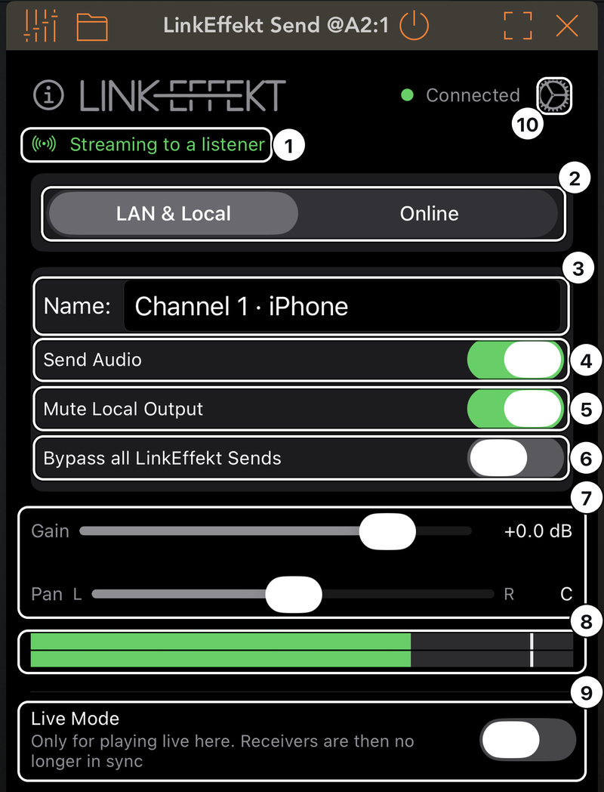
1Status line
2Destination
3Name
4Send Audio
5Mute Local Output
6Bypass all LinkEffekt Sends
7Gain and Pan
8Level meter
9Live Mode
10Gear: Ableton Link settings
All Send controls in detail
Status line under the header: “Streaming to a listener” or “Waiting for a receiver”. Listeners on this device (This device / This host) count too. In Online mode the ONLINE badge in the header shows the room status instead. With Bypass all LinkEffekt Sends on, the line stays empty and the orange note says it all.
Destination: LAN & Local / Online: where this track streams (LAN & Local always includes listeners on this device). Switching Online to LAN & Local removes only this track from the room; the room itself stays open until you tap Leave (a “room is still open” line with a Leave button stays visible in the LAN & Local tab).
Name: the channel name receivers see. Renames propagate live, also in Online rooms, and receivers keep their subscription (and remember the new name for the next time the project loads). If another channel in your network carries the same name, the status line says so and offers Rename (adds the device, or the next free number). LinkEffekt never renames on its own.
Send Audio: master switch for streaming this track. Off = the plugin passes audio through locally but sends nothing.
Mute Local Output (default on): mutes the track here after streaming, so you don't hear it twice (once here, once through the receiver). It only applies while the track streams: with Send Audio off, the plugin bypassed or Bypass all LinkEffekt Sends on, the track plays here. Turn it off to hear yourself when the receiver is somewhere you can't hear: Online, headphones on the receiver, another room. In hosts with delay compensation such as AUM, the track then plays as much later as everything else in this app while the Send renders ahead, so it stays in time (see Live Mode).
Bypass all LinkEffekt Sends: one switch for every Send on this device, in every host. Each Send then behaves as if your host bypassed it: nothing is streamed, and every track plays here unchanged. An orange note at the top of every Send says so; tap it to turn the switch off. It stays on until you turn it off, also after a restart. Example: Take the iPad to the couch.
Gain / Pan: applied to the stream (and to the local output), with click-free ramps. The bottom of the gain range is true silence. Pan keeps the center at full level; turning it toward one side lowers the other.
Bypass (in your host): stops the stream and passes the track through unchanged.
Level meter: post gain/pan; red = clipping (tap to reset).
Live Mode (at the bottom of the Send):
What it does: in hosts with delay compensation such as AUM, LinkEffekt Send asks the host to render this track ahead, exactly as far as its receivers need (their buffer plus the connection, up to 200 ms). They get the audio before its beat and play it on their grid (see Beat Sync). The host keeps its own tracks in time by delaying everything else in this app by the same amount.
When to turn it on: only if you play live in this app and that delay is in your ears. With it on there is no extra delay here, but receivers are no longer in sync: they play the stream behind the beat, by the connection plus their buffer. Bar Sync on a receiver puts it back on the bar, one bar late. The line under the switch says so, in orange while it is on.
Switching: receivers that are already listening follow by themselves with a short jump: behind the beat when you switch it on, back onto the beat when you switch it off.
Where it appears: only where the host really renders ahead and a receiver listens. Not in Online mode (receivers are always on the bar there), and never in Cubasis, which has no delay compensation.
Gear (Ableton Link settings): the Link session and Share Audio (required for sending to other devices; Online and listeners on this device work without it). Below that:
Link Offset (±100 ms): shifts this channel's timing at every receiver. Negative offsets can cause dropouts on the receiver; raise the receiver's Buffer if needed. Apply to all channels uses one value for all Send instances in this host.
Send at 48 kHz: for receivers that need 48 kHz, e.g. Ableton Live's Link input.
The plugin version, the first thing support asks for.
Orange banner “Share Audio is off”: shown only where the switch actually blocks something, i.e. when nobody on this device is listening and the destination is LAN & Local. Tap it to open the settings.
Freemium: the second and further Send instances without the in-app purchase keep passing audio through locally but do not stream (“Channel Limited” banner with an unlock button).
5 · LinkEffekt Receive: reference
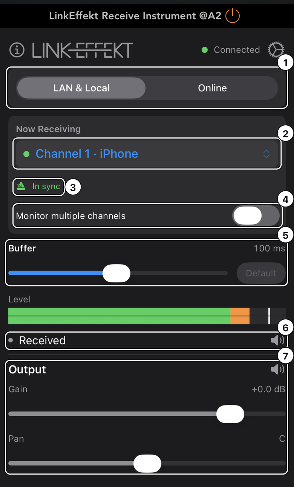
1LAN & Local / Online
2Now Receiving
3Status
4Monitor multiple channels
5Buffer
6Received
7Output
Bar Sync appears next to the status where it helps.
All Receive controls in detail
LAN & Local / Online selector: which world the channel list below shows. LAN & Local covers network channels and the direct paths on this device (This host / This device). The header shows Link peers (LAN) or the room status (ONLINE badge).
Now Receiving: pick exactly one channel. “Channel (unavailable)” means the sender disappeared (app closed, network lost).
Monitor multiple channels (in-app purchase): sum several channels into this plugin's stereo output. Channels that are active but belong to the other transport tab are shown with a LAN/Local/Online tag so nothing is summed invisibly. For separate faders per channel, use one Receive instance per channel instead.
Status: one line under the channel menu, always in the same place, so nothing below it jumps. Problems appear in the same place in orange (see Troubleshooting), and so do the hints while nothing is selected, for example “Channel 1 · iPad found: tap to listen”.
Status
Meaning
In sync
On the beat, audio flowing.
… ms behind the beat
The sender cannot render ahead (Cubasis, Ableton Live, Live Mode on the sender); the number says how far.
No shared beat reference. Audio flows normally, just not beat-aligned.
Free-run. Enable Ableton Link (gear)…
Tells you how to get beat-locked on LAN.
Press play in your host to lock to the beat
Online: the beat lock waits for your host’s transport.
Tempo mismatch
Online: the line names both tempos.
Bar Sync (the switch next to the status; LAN & Local tab; Online is always bar-synced): locks the incoming downbeat to your bar: one bar late, but rock-solid even over a shaky connection. It is offered where it helps: when the audio plays behind the beat, or when dropouts keep coming. On a direct connection (This device / This host) it is not needed. It places the audio on the shared Link beat, so Ableton Link must be on in the host apps (see Basics).
Buffer (3 to 200 ms, always visible in low-latency mode): how much audio LinkEffekt holds in reserve against gaps in the connection, like the Latency setting for Link Audio in Ableton Live.
Default: 100 ms over a network, 2 ms on the same device.
On the beat or behind it: if the sender runs LinkEffekt Send in a host with delay compensation (AUM), it renders that far ahead, so you hear the audio on your beat and have the full buffer in reserve. Otherwise the audio plays behind the beat by the connection plus the buffer, and the status says by how much.
Set once: the value is set when you pick a channel; after that nothing moves it. A gap longer than the buffer is a short dropout, and the audio returns on the beat.
Your own value: move the slider; it applies at once, and the sender follows (raising: at once, lowering: after ten seconds). Default takes you back.
Dropout count: if dropouts keep coming (more than two in ten minutes), their count appears next to Buffer: raise the value until it stays quiet. Tap the count to start counting again; the buffer stays as it is.
If the connection itself changes while you play (a device switches to Bluetooth headphones, the sender's host changes its buffer size), LinkEffekt measures once more. Later audio: when some of it is missing in every tenth of a second for a full second while packets keep coming, the value goes up; you hear a gap or stutter of up to two seconds. Earlier audio: the value goes down and the stream jumps forward, without a dropout. Changes the sender announces (Live Mode, a new send-ahead) and ordinary network hiccups never trigger this.
Advanced timing (only with Bar Sync and in Online mode, collapsed by default):
Nudge (±100 ms): fine-tunes where the received downbeat lands, minus = earlier, plus = later. A full bar of buffered audio gives room to play earlier or later. A non-zero value is shown next to the “Advanced timing” label. Apply to all channels in this host passes the same value to every LinkEffekt instance in that host, because what it corrects (the host's own output delay) belongs to the host, not to one channel.
Mixer block, in signal order: Received (mute the incoming stream), Host track (Receive effect only; the track's own input, default muted to prevent feedback, see Troubleshooting), and Output with master gain/pan/mute. Bypassing the Receive effect in your host passes the track through unchanged; Host track is then no longer muted, so mind a live mic near your speakers.
Problems show in the status place under the channel menu, in orange and in plain language (see Troubleshooting). When audio is flowing there is no message: the green dot, the status and the meter say it.
After loading a project the Receive picks its saved channel again, first by the sender's channel, otherwise by name, but only if exactly one channel carries that name. If there are several (for example two devices that both still use an old “Channel 1”), it picks nothing and the status says “2× Channel 1: pick the right one.” A wrong sender in your monitor would be worse than one tap.
When the sending app restarts (closed and opened again, or reloaded by the system), its channel comes back under the same name with a new identity. The Receive finds it again by itself a few seconds later, under the same rule: only if exactly one channel carries that name.
Gear, then Settings: Ableton Link settings and the plugin version.
Diagnostics for support: every Send and Receive instance records its timing on this device while it runs (one line per second, plus events such as channel changes and dropouts). Nothing is shown in the plugin and nothing leaves the device on its own. If something sounds wrong, keep playing for a minute, then open the LinkEffekt app and tap Share diagnostics (AirDrop, Mail or Files). Share when you are done playing: the share sheet can unsettle the Wi-Fi for a while (see Dropouts after AirDrop).
Receive vs. Receive Instrument: identical engine. Use the effect everywhere you can insert it; use the Instrument where the channel needs a source (AUM source slot, a software-instrument track). Both have one stereo output.
6 · Online mode
Online mode streams over the internet, peer-to-peer, encrypted end-to-end (DTLS). It needs the in-app purchase on both sides. A walk-through for two players: Jam online with a friend.
Person A: in LinkEffekt Send, switch Destination to Online, tap Create Room and share the room code (copy button next to the code).
Person B: in LinkEffekt Receive, switch the top selector to Online, enter the code and tap Join.
B picks A's channel from Now Receiving. For two-way audio, B also loads a Send (or uses Send my track, see below).
Press play on your host transport on both sides and set both hosts to the same tempo. The peer's audio locks onto your beat grid, delayed by whole bars (see Beat Sync).
To hear your own track while you stream, turn off Mute Local Output in the Send. It is on by default so that nobody hears a track twice when the receiver is in the same room.
The header shows an ONLINE badge with the room code whenever an instance is in Online mode: green dot = peer connected, orange = waiting for a peer.
Good to know
One room per host app. All Online instances inside the same host share one room and one connection. The first instance creates/joins; the others follow automatically. Leave disconnects all of the host's online tracks (the dialog says so).
Multiple tracks: every Send-Online instance is its own stream. The peer sees each one as a separate channel (up to 8 per direction).
Send my track (Receive effect in Online mode): also streams this track's input into the room, giving full two-way audio in a single plugin slot. Built for hosts with only one usable slot, e.g. DJ apps. To hear your own track as well, unmute Host track in the mixer block.
Room codes are one-time invitations relayed by the signaling server; the audio itself flows peer-to-peer, DTLS-encrypted. No audio passes through the LinkEffekt servers. Rooms with only one participant close after 30 minutes; active sessions have no time limit.
Reconnect: if one side drops out, rejoin with the same code while the other side is still in the room. If both left, create a fresh room.
7 · Beat Sync: how it works and what to expect
Audio that travels through a network always arrives late; no software can remove that. What LinkEffekt can do is make the delay musical:
How it works, in detail
LAN (low latency, Bar Sync off): the receiver places the incoming audio onto your local Ableton Link grid: on the beat when the sender renders ahead, otherwise a fixed distance behind it (the connection plus your buffer, shown in the status), never drifting. Both host apps must be in the same Link session: Ableton Link on in the host apps themselves, not only in the plugins (see Basics).
On the grid, with no offset: in a host with delay compensation (AUM), LinkEffekt Send has the host render its track ahead, exactly as far as its receivers ask for (their buffer plus the connection, up to 200 ms). The receiver then plays it right on your grid with its full buffer in reserve; Bar Sync is not needed and not offered.
With several receivers, the sender renders ahead for the one that needs the most.
In a jam, where both devices send and receive, both directions stay on the beat.
The price is on the sender's side: everything in that app sounds that much later (typically 50 to 150 ms). For material you play live there, turn Live Mode on in the Send (see LinkEffekt Send); receivers then play it behind the beat.
Bar Sync (LAN) / Online: the delay is rounded up to whole bars on your host's beat grid. The incoming “1” lands exactly on your “1”, typically one bar later (2 s at 120 BPM).
With the receiver in the same room, this suits sequenced material: someone playing live on the sending device would hear their part again one bar later from the receiver.
Online needs the host transport playing on both sides and the same tempo on both hosts. When you press play, expect about one bar of silence while the buffer fills, then it locks.
The stream plays what the sending app plays: if that app itself sits a few milliseconds off the Link beat, so does the stream, and Nudge moves it back.
Free-run is what you get without a shared beat reference: lowest latency, no alignment. Fine for monitoring, speech, or when you play by ear.
A constant offset in low-latency mode, when the sender does not render ahead (Cubasis, Ableton Live as the sender, Live Mode on): received audio sits behind your local tracks by the connection plus your buffer, as the status says, plus whatever your host delays after the plugin (Cubasis, for example, does not compensate plugin latency at all). That is the normal situation for any live signal and does not matter for monitoring; for grid-accurate work turn on Bar Sync (exact placement, one bar late) and use Nudge for the last few milliseconds.
Cubasis: turn off Multi-core Processing (Setup > Audio). That setting is the extra buffer Cubasis puts behind the plugin without reporting it; Cubasis shows it as Guard buffer.
With it off, the guard buffer is 0 ms and the received audio is tight without any Nudge. The audio buffer size then no longer affects timing accuracy, so pick one that keeps the engine comfortable.
If you must keep Multi-core on, read the Guard buffer value (Setup > Audio, tap the latency total) and set Nudge to minus that value (Bar Sync or Online). Measured on device: a 21 ms guard buffer needed exactly Nudge −21.
When Cubasis is the sender, the sign flips: turn Multi-core off there, or use Bar Sync on the receiver with a positive Nudge of the same size.
AUM has no such buffer.
Ableton Live (LAN): set Sync to Incoming Audio by what you do (Live's Settings > Link): off to play Live’s tracks on iOS, on to record iOS audio into Live and when audio goes both ways. In every case leave AUM's Link latency compensation at 0: LinkEffekt already places audio on the Link beat. The three setups step by step: the Ableton Live workflows.
The two hosts' own metronomes are not aligned to each other over the internet. Each side hears the peer on their own grid. In a remote jam that is exactly what you want, since each player only hears their own device.
8 · Troubleshooting
No channel appears in Now Receiving (LAN)
Everything on one device? Look for the This device / This host tag: those channels work without Wi-Fi, network permission or Link (see Same device or same host).
Same Wi-Fi network? Some routers isolate clients (“AP/client isolation”). Disable that, or use a hotspot.
Open the LinkEffekt app once (Local Network permission). The plugin shows a hint if the app was never opened. Check that LinkEffekt is allowed in Settings → Privacy → Local Network, then restart the host app.
On the sender: gear, then Ableton Link and Share Audio must be on.
Audio arrives, but off the beat
Is Ableton Link on in both host apps (in the app's own settings, not only in the plugin's gear)? Without it the sending app plays in its own tempo and on its own bar, and no receiver can put that on your beat (see Basics).
Same tempo in both apps? With Link on, they follow each other automatically.
Channel selected, but no sound: read the status under the channel menu
No audio from the sender. Is Share Audio on there? Same network? · the sender isn't streaming: Share Audio off, Send Audio off, or a different network.
The host is not running this plugin… · the host never renders the channel. In AUM: give the channel a source, or use Receive Instrument as the source.
Receiving, but Received is muted below / … Output is muted below / … Output Gain is at −∞ · un-mute or raise the control it names.
Free limit: this is a second receive instance… · second Receive instance without the in-app purchase; unlock or remove it.
No audio from the peer… · (Online) the peer left the room or isn't streaming.
2× …: pick the right one. · (after loading a project) the saved name exists more than once; pick the channel in the menu.
Crackles or dropouts
The buffer is set once you pick a channel, so a connection that is less steady than at that moment produces dropouts rather than a moving number. When more than two occur in ten minutes, the Receive shows their count next to Buffer: raise the Buffer until it stays quiet. Tapping the count starts a new count, for example once the cause is gone. Where the sender renders ahead (AUM), a larger buffer stays on the beat, because the sender follows. On weak Wi-Fi move closer to the router, or use a direct connection on one device.
Dropouts in bursts after AirDrop
AirDrop, AirPlay, Universal Control, Sidecar and Handoff use a direct radio link between Apple devices. While it is active, the Wi-Fi keeps pausing for up to almost half a second: more than a buffer on the beat can cover (Bar Sync can, one bar late).
It starts as soon as a share sheet opens, before anything is sent, and after an AirDrop it can last about a quarter of an hour. Restarting the app or the host does not help; the dropouts stop by themselves.
So while you play, don't AirDrop or open a share sheet on any of the devices, also not to send something to your Mac.
Background and lock screen are fine: LinkEffekt keeps streaming without dropouts while the host runs in the background or the screen is locked.
If your router lets you choose its channel, set 5 GHz to channel 44 or 149 (2.4 GHz: channel 6). The direct link uses these channels, so the Wi-Fi does not have to switch away for it.
The receiver goes quiet or stutters for up to two seconds, or jumps once
The connection changed under it, e.g. Bluetooth headphones or a new buffer size in the sender's host. The receiver measures once more and plays on (see Buffer in LinkEffekt Receive). Live Mode on the sender costs only a short jump.
Feedback howling
The receiving track has a live mic input feeding through. Keep Host track muted (the default) in the Receive mixer, or use the Receive Instrument (no input at all).
I hear the track twice (sender side)
That is the dry signal plus the stream. Keep Mute Local Output on in the Send.
Everything in my sending app sounds a bit late
That is the Send rendering ahead for its receivers (see Beat Sync). Only if you play live there, turn Live Mode on in the Send; receivers are then no longer in sync.
Online: “Room not found”
Code typo (codes are letters/numbers only; pasted spaces are removed automatically), or the room expired because it stayed empty. Create a fresh room.
Online: stuck on “waiting for peer”
The other side hasn't joined yet or joined a mistyped code. Re-share the code; both sides need the in-app purchase.
Beat Sync won't lock (Online)
Is the host transport playing on both sides? Same tempo? The status line names what's missing, and a tempo mismatch is shown with both values.
Timing is stable but consistently early or late (LAN)
On the receiver, turn on Bar Sync and use Nudge under Advanced timing (±100 ms). Without Bar Sync there is nothing to nudge: audio cannot play earlier than the sender delivers it. Sender-side there is also the Link Offset slider in the Send's gear settings.
My Mac sounds late against my iOS devices (Ableton Live, any Link app)
Audio tools that hook into every app on the Mac, such as SoundSource, Audio Hijack or system-wide equalizers, delay the sound without telling the app, and Link cannot compensate for that. Exclude your DAW in that tool (SoundSource: Settings, Exclusions, then restart the DAW) or quit the tool. Measured with SoundSource: about 55 ms.
Ableton Live's metronome sounds later than my iPad's
Sync to Incoming Audio is on in Live. It delays Live's own playback on purpose, which is right while you send audio to Live (see Beat Sync). If you only receive Live's tracks, turn it off.
Received audio sits slightly behind my local tracks
The status says how far (“… ms behind the beat”): the sender cannot render ahead (Cubasis, Ableton Live, Live Mode). If the sender runs in AUM with Live Mode off, it plays on the grid. Otherwise, for grid-accurate recording: Bar Sync on, then Nudge to taste; afterwards shift the recorded region by the whole bars Bar Sync added.
9 · Frequently asked questions
Does LinkEffekt work with Ableton Live?
Yes, in both directions. Live 12.4+ receives Link Audio directly, and LinkEffekt Send appears there as an input channel. Live also sends: turn on Link and its Audio switch under Live's Settings > Link, and every Live track with an audio output (including returns and the Main output) appears in LinkEffekt Receive as a channel. Live does not render ahead, so turn on Bar Sync in the Receive for exact placement on the bar. In Live, Sync to Incoming Audio depends on the direction: off when you only receive Live's tracks, on when you record into Live. Step by step: the Ableton Live workflows.
Does it work without a network?
Yes. Between apps on one device (channels tagged This device / This host) no network, permission or Link setup is needed (see Same device or same host). Only cross-device LAN and Online need connectivity.
How many channels can I run?
With the in-app purchase: as many Send/Receive instances as your device handles; Online supports up to 8 streams per direction per host.
Does audio go through your servers?
No. Online audio is peer-to-peer and DTLS-encrypted; the server only relays the room handshake. If a direct connection is impossible, an encrypted relay (TURN) forwards the still-encrypted stream.
Why is there always some delay?
Physics: network transit plus safety buffering. LinkEffekt makes the delay stable and, with Beat Sync, musical (see Beat Sync). With a sender in AUM it lands right on your grid.
Which sample rates are supported?
The host's rate (44.1/48/96 kHz…) on both sides; LinkEffekt converts internally. Online always transmits at 48 kHz/Opus.